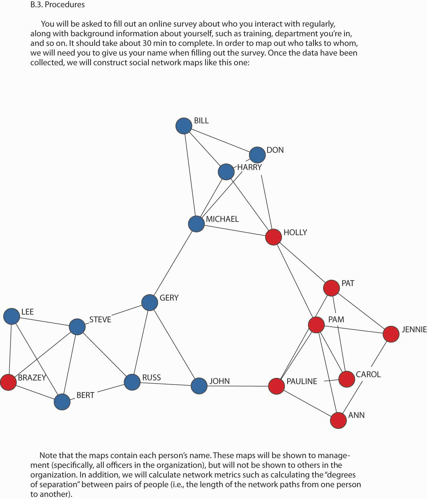

Before delving into the ethical issues, let’s revisit social network analysis. Social networking is built on the idea that there is a determinable structure to how people know each other, whether directly or indirectly. Notions such as six degrees of separation—that everyone on earth is separated from everyone else by no more than six intermediate personal relationships—have popularized the idea that people can be (however unknowingly) connected through common associates. As we mentioned at the beginning of this chapter, social network analysisMapping and measuring of relationships and flows among network actors. (SNA) is the mapping and measuring of relationships and flows between people, groups, organizations, computers, Web sites, and other information/knowledge processing entities. This can be done with paper and pencil surveys, software programs, and even comparing e-mail and phone logs, but the desired output is essentially the same. Social networks are the invisible organization. That is, they are the actual organization behind the printed organization chart.
Application of the principles behind P-O-L-C should help managers lead their organizations to bigger and better things, and social networks are a key ingredient in the “organizing” component.We have adapted these ethical concerns from Borgatti, S. P., & Molina, J.-L. (2003). Ethical and strategic issues in organizational network analysis. Journal of Applied Behavioral Science, 39(3), 337–349, and Borghatti, S. P., & Molina, J.-L. (2005) Toward ethical guidelines for network research in organizations. Social Networks, 27, 107–117. So, what harm can there be if a manager uses SNA to uncover the invisible structure in their organization? Three top ethical concerns are (1) violation of privacy, (2) psychological harm, and (3) harm to individual standing. Let’s look at each of these three ethical concerns in turn.
Managers typically use surveys (sometimes with the aid of consultants) to capture and map the structure of a social network. If each employee has consented to the survey, then the manager is on much more solid ground. Care must be taken, however, that participants are aware of the survey’s objectives and applications. Recall that a network diagram reflects a pattern or relationship among people, such that survey participants will actually be reporting, by definition, on what other individuals are doing. For instance, if a communication network in your organization is being mapped, you might be asked who you initiate communication with and who initiates it with you. You might also be asked for some indication of communication frequency. So, even if you agreed to complete the survey, the other people that you identify as part of your network may have not.
Surveys are not the only basis for mapping social networks. Indeed, think about the network that might be reflected by the contacts on your cell phone or e-mail lists. Given technology today this data could be readily converted into a social network map showing who corresponded with whom and the length of such correspondence. Moreover, with content coding software, even the content of the e-mails could be coded. This type of social network mapping has more obvious ethical implications because participants of the map may never know that they are actually being mapped!
In both the survey-based and electronic mapping approaches, you might keep the identities of individuals confidential, thereby protecting their privacy. However, it may be possible to guess the names of individuals by virtue of their location in the network. For example, if a certain type of information can only originate with one part of an organization, it might be pretty obvious to inside observers how such information flowed internally and externally. Similarly, “organizations are typically quite small, so that even a small number of attributes can uniquely identify individuals.”Borghatti, S. P., & Molina, J.-L. (2005). Toward ethical guidelines for network research in organizations. Social Networks, 27, 107–117. Second, demographic information on each person is often available in the human resources database or is common knowledge because everyone knows everyone else. Even if the outcome of such informal information flows is positive, the actual communication may be prohibited internally by organizational rules and procedures. For example, you are likely familiar with the way Post-its were developed at 3M through internal entrepreneurial actions—at the time, however, some of those actions were not an explicit part of 3M’s rules and procedures (though, fortunately for 3M, its “bootlegging policy” gave the inventors an opportunity to explore market options for the adhesive that did not stick).To foster creativity, 3M encourages technical staff members to spend up to 15% of their time on projects of their own choosing. Also known as the “bootlegging” policy, the 15% rule has been the catalyst for some of 3M’s most famous products, such as Scotch Tape and—of course—Post-it notes. Retrieved November 17, 2008, from http://solutions.3m.com/wps/portal/3M/en_HK/post-it/index/post-it_past_present/history/the_whole_story?PC_7_RJH9U523086C5023CPSB8R18O2_assetType=MMM_Article&PC_7_RJH9U523086C5023CPSB8R18O2_assetId=1180595718358&PC_7_RJH9U523086C5023CPSB8R18O2_univid=1180595718358.
The two remaining ethical issues are somewhat related. As you can imagine from the previous examples, violation of privacy might lead to unforeseen, and possibly unwarranted, disciplinary action. This would harm an individual’s standing. For instance, if a social network map revealed that one individual or an entire department is the bottleneck for information flowing from one part of the organization to another, action might be taken against that individual or members of the department. It may truly be the case that this person or department is a roadblock to progress; but it may just as likely be the case that managers on one side or the other (in terms of social network) of the apparent bottleneck are not very good at delegating or eliciting information. Similarly, the organization may just be trying to run too much through one particular individual in the network. What one views as an indication of individual incompetency may, in fact, be a need for training or the addition of staff to move the information more effectively.
The possible harm to individual standing should be noted if 3M had used a social network map to understand the roots of its Post-it homerun and had internal policies prohibiting the use of time and money on nonapproved projects. If a network survey revealed that 3M’s breakthrough was caused by rogue employees—that is, employees who were not following the rules about new product development and so on—the individual credited with that innovation might have been reprimanded or fired. This, of course, was not the case in 3M, but you can imagine how organizational policies meant to foster internal efficiencies might prohibit an individual from contravening them, regardless of the benefits of the eventual outcome.
Finally, the purpose of the network analysis may be to identify areas of the firm that just aren’t critical to its mission, vision, and strategy. As social network researchers Steve Borgatti and Jose-Luis Molina note, “This introduces dangers for the respondents because management may make job or personnel changes (e.g., firing non-central workers) based on the network analysis. In fact, in the case of a consulting engagement, this may be the explicit purpose of the research, at least from the point of view of management.”Borghatti, S. P., & Molina, J.-L. (2005). Toward ethical guidelines for network research in organizations. Social Networks, 27, 107–117. Obviously, one of the roles of management is to determine the efficient and effective allocation of resources. SNA can be a useful tool in this determination, but the purpose of the analysis should be made clear to participants from the outset.
This third area can be subtle, but it is very important as well. Psychological harm might arise when information is used in a way that manipulates the behavior of individuals. For instance, managers are likely to develop maps of social networks because their managers believe that there might be better ways of planning, organizing, leading, and controlling. As Borgatti and Molina point out, however, SNA in this context is explicitly part of a transformation process in which the group is shown data about itself, such as network diagrams, and asked to react to it. Experience suggests that this technique serves as a powerful catalyst for change. “It is dangerous, however, because of the powerful emotions it engenders in a group setting and this can put the researcher in the position of practicing therapy without a license.”Borghatti, S. P., & Molina, J.-L. (2005). Toward ethical guidelines for network research in organizations. Social Networks, 27, 107–117 (quote on p. 114).
Now that you understand some of the ethical issues arising from SNA you are in a better position to anticipate and manage them. Of course, we should refresh your memory on the general ethical decision-making guidelines before delving into more SNA-specific ones. In brief, the following are the six steps:Hartman, L., & DesJardins, J. (2008). Business ethics: Decision-making for personal integrity and social responsibility. New York: McGraw-Hill.
Consider the alternatives you have available to you and how they affect the stakeholders. These include:
Beyond these general guidelines, there are three specific ways that you might manage SNA related ethical concerns. These are (1) full disclosure, (2) anonymization and opt-out options, and (3) participant training and feedback. Let’s look at each of these in turn.
First, you might consider some way of applying the notion of informed consent to the participants of an exercise that maps the organization’s social networks. This means that each person included in the mapping process would be told the purpose of the exercise, along with what the outcome would look like. We provide an example disclosure form where they would also be apprised of the possible risks. For instance, one SNA informed consent form includes the following paragraph:
Risks and costs Since management will see the results of this study, there is a chance that someone in management could consider your set of communication contacts to be inappropriate for someone in your position, and could think less of you. Please note, however, that the researchers have obtained a signed agreement from management stipulating that the data will be used for improving communication in the company and will not be used in an evaluative way.Borghatti, S. P., & Molina, J.-L. (2005). Toward ethical guidelines for network research in organizations. Social Networks, 27, 107–117.
Second, managers can consider different ways of making the process anonymous or giving individuals the option to opt-out of the mapping process. For example, department-level network information could be presented instead of individual-level information. Where it is impossible to protect the privacy wishes of one individual, then an op-out option is the only way to protect their privacy, though this will clearly affect the accuracy of the SNA. If an individual opts out, this should mean that their name appears nowhere on the social network diagram (even if they are identified by another individual as being part of their social network). For instance, in the sample map, you can see that the map would be very disjointed if John and Holly opted out of the SNA.
Figure 9.12 A Social Network Survey Participant Disclosure Form
Source: Reproduced with permission of Borghatti, S. P., & Molina, J.-L. (2005). Toward ethical guidelines for network research in organizations. Social Networks, 27, 107–117.
Finally, managers can consider the application of SNA in conjunction with a larger employee development program where participants are taught about social network analysis and then their results are debriefed with them one on one. Where there are still concerns for privacy, individuals can map their own social networks and then act on them personally. It is management’s responsibility to steward the organization’s resources in a way that is consistent with the mission and vision. In that sense, SNA is a valuable tool for understanding how the organization’s work actually gets done. However, because it is such a powerful and revealing tool, managers must be thoughtful in its ethical application.
We close this section with some discussion of why it might actually be unethical to neglect the organization’s social network. Be sensitive to the ethical issues surrounding the management of social networks, but that does not mean leaving social network relationships to chance. For instance, if you know that your department would be more productive if person A and person B were connected, as a manager wouldn’t you want to make that connection happen? In many firms, individuals are paid based on performance, so this connection might not only increase the department’s performance, but its personal incomes as well.
The broader issue is that social networks exist and that the social capital they provide is an important and powerful vehicle for getting work done. That means that the ethical manager should not neglect them. Wayne Baker, author of Achieving success through Social Capital, puts it this way:
“The ethics of social capital [i.e., social network relationships] requires that we all recognize our moral duty to consciously manage relationships. No one can evade this duty—not managing relationships is managing them. The only choice is how to manage networks of relationships. To be an effective networker, we can’t directly pursue the benefits of networks, or focus on what we can get from our networks. In practice, using social capital means putting our networks into action and service for others. The great paradox is that by contributing to others, you are helped in return, often far in excess of what anyone would expect or predict.”Baker, W. (2000). Achieving success through social capital. San Francisco: Jossey-Bass.
Now that you have a better understanding of social networks and SNA you need to understand some of the ethical implications of the application of such knowledge. You learned that SNA gives rise to concerns about privacy, harm to individual standing, and psychological harm. You were reminded that the general ethical decision-making framework applies to your use of SNA, but you also learned some specific approaches to managing SNA-related ethical issues. Finally, you were presented with arguments about why neglect of an organization’s social network also can have negative ethical implications.